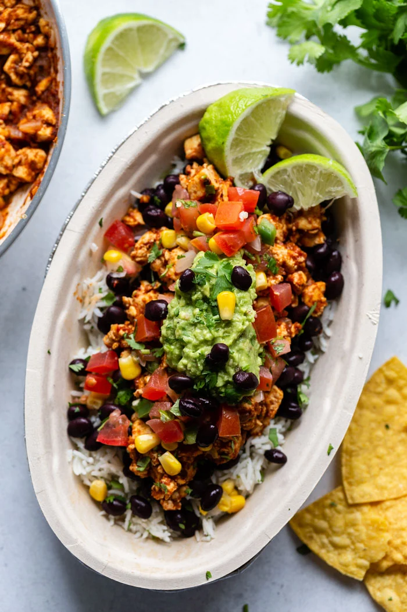

Homemade Sofritas
I love the sofritas option at Chipotle, but I don't always feel like paying for it. So, I started making
my own version at home.
This isn't a copycat recipe. I merely used Chipotle's concept as inspiration, so this won't taste like what you order at
the restaurant. Still delicous, though, and more affordable!
----------
Ingredients (Seafood):
- 1 pack of firm tofu
- 1 can of black beans
- Fresh cilantro (coriander)
- Green onions
- 1 Red onion
- Lemon juice, or lime juice
- 2 packets of store-bought taco seasoning (taco seasoning packet alternative: cumin, paprika, salt and pepper)
- 1-2 tbsp of minced garlic
- Canola oil
- Mushrooms
----------
Steps:
1. Drain and dry the tofu overnight, just enough so it's not soggy and wet to the touch. If short on time,
dry the tofu in a food dehydrator or deep fryer.
2. Slice red onion and mushrooms. Wash and chop green onions and coriander. Set aside green onions and coriander.
3. Heat up a large cast iron skillet on medium-high heat, add a drizzle of canola oil. Add sliced red onion to skillet.
Cook on mediium high-heat until onions are soft, stirring ocassionally. Add mushrooms and continue cooking until mushrooms are also soft.
Mix in 1-2 tbsp of minced garlic. Remove cooked vegetable mixture and set aside, returning cast iron to stove.
4. Crumble in the tofu and drizzle more canola oil. Cook untl remaining water from tofu boils away, and tofu is slightly seared. Add in
can of black beans and continue cookng for 3-5 minutes.
5. Mix vegetable mix back into skillet. Remove skillet from heat. Stir in taco seasoning (or homemade seasonign mixture) and a dash
of lemon juice (or lime juice). Add in chopped coriander and green onions. Serve wrapped in tortillas, or over rice with guacamole.